Fisher symmetry
and the geometry of quantum states
Jonathan A. Gross, Amir Kalev, Howard Barnum, Carlton M. Caves
Center for Quantum Information and Control, University of New Mexico

Statistical distance
Quantify distance between two quantum states by how statistically distinguishable they are
More distinguishable: further apart
Less distinguishable: closer together
Example: coin bias
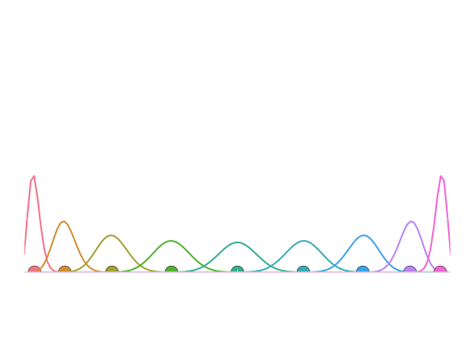How far apart are coins with different biases?
W. K. Wootters, Phys. Rev. D 23, 357 (1981)Example: coin bias
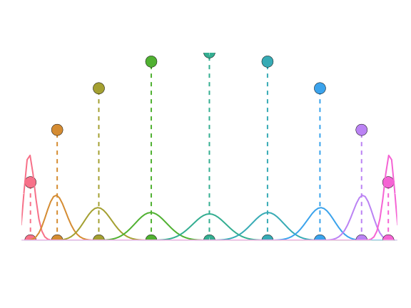How far apart are coins with different biases?
W. K. Wootters, Phys. Rev. D 23, 357 (1981)Example: coin bias

Statistical fluctuations
The fluctuations depend on the estimator used
The Cramér–Rao bound gives us an achievable lower bound
This allows us to generally define our statistical distance in terms of the Fisher information (FI)
Fisher information
The FI quantifies the information a random variable provides about a parameter
Coin FI
Kullback–Leibler divergence
Quantifies how likely you are to mistake one distribution for another (not symmetric)
Locally it defines the same distance as the FI
Multiple parameters

This matrix can be used as a metric
Including quantum mechanics
Random variable defined by a positive-operator-valued measure (POVM),
We write the FI generated by a particular POVM as
Measurement dependence
Measurement dependence
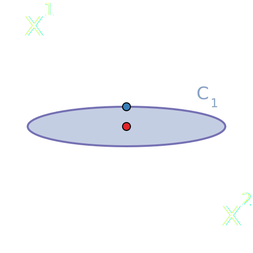
Measurement dependence
Measurement dependence
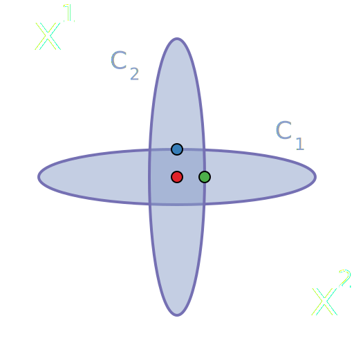
Quantum Fisher information
 S. L. Braunstein and C. M. Caves,
Phys. Rev. Lett.
72, 3439 (1994)
S. L. Braunstein and C. M. Caves,
Phys. Rev. Lett.
72, 3439 (1994)
Gill–Massar bound
Assume Hilbert space of finite dimension
The bound is saturable
R. D. Gill and S. Massar, Phys. Rev. A 61, 042312 (2000)Fisher symmetry
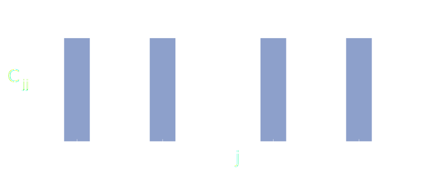Can choose parameters so .
Saturate GM bound:
Fisher symmetry
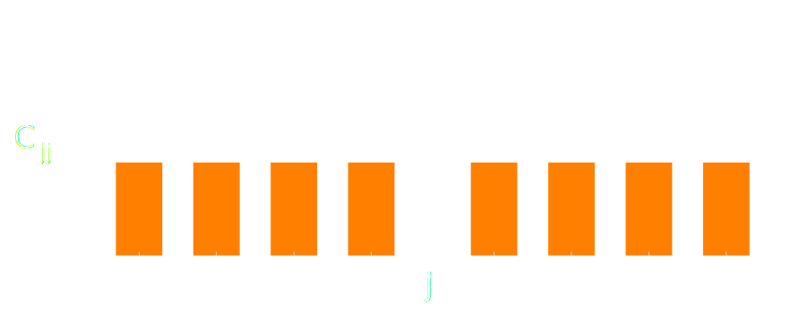Can choose parameters so .
Saturate GM bound:
Fisher symmetry
Fisher symmetry
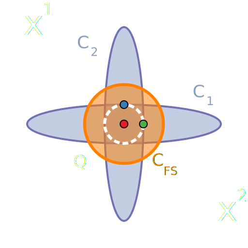Local tomography
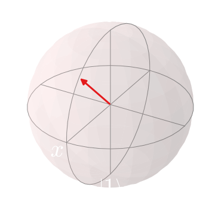Have device to prepare a target state
Local tomography
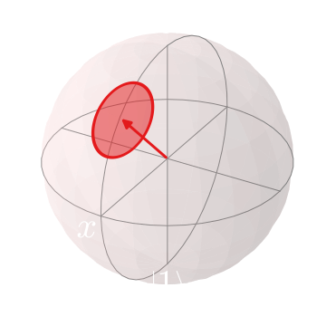Want to measure deviations
Pure states: ✔
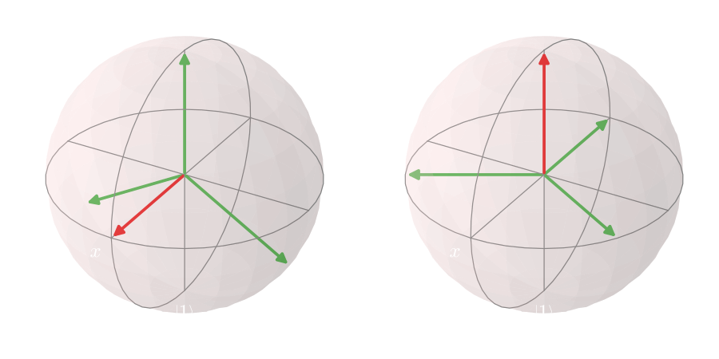FSMs have been constructed for pure states in all dimensions
N. Li, C. Ferrie, J. A. Gross, A. Kalev, and C. M. Caves, Phys. Rev. Lett. 116, 180402 (2016)Maximally mixed state: ✔
POVM is an FSM iff it is a 2-design
Examples: SIC-POVMs, MUBs, uniformly random basis
Qubits: ✔
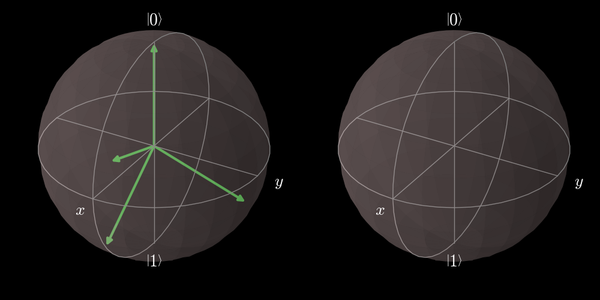Qubits: ✔
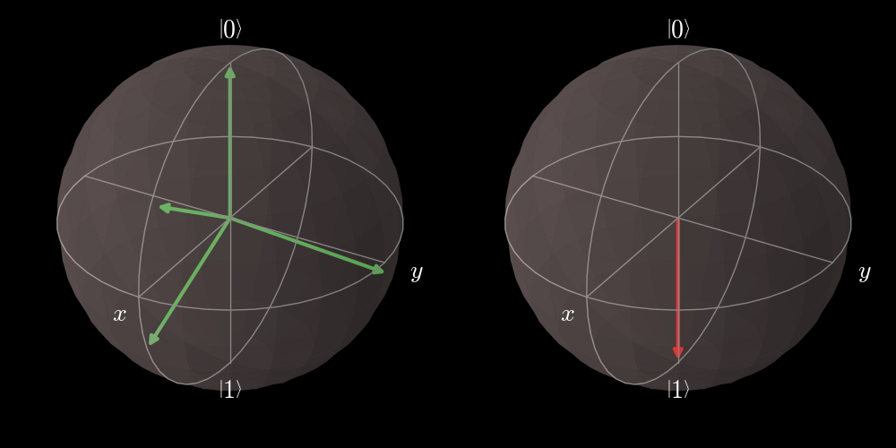Qubits: ✔
Qubits: ✔
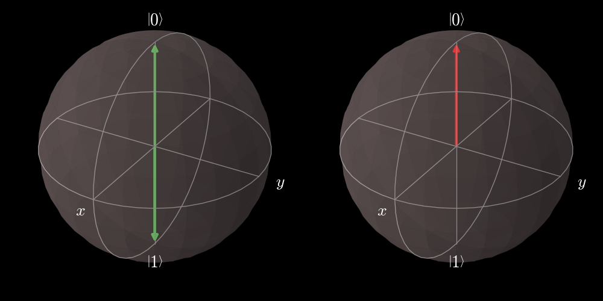State-space geometry
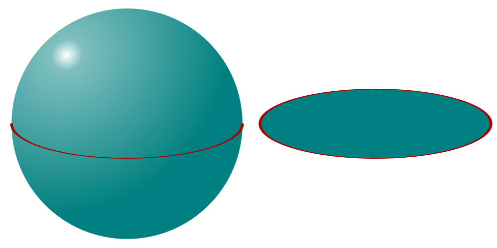Consider equatorial plane of the Bloch ball
As in the simplex case, Euclidean distance doesn't reflect statistical distance
State-space geometry

Just like the simplex is naturally a semicircle, the Bloch ball is naturally the upper hemisphere of
Qubits: ✔
Symmetry of CFI
Consider tensor form of CFI
This is invariant under the Choi isomorphism
Asymmetry of QFI
For the QFI to be invariant under the Choi isomorphism, it must be that
Only true for qubits and at the maximally mixed state
Higher dimensions: ✘
Need to find a new geometry in the higher-dimensional multiparameter setting
Purity for CFI
Want as close to uniform accuracies as possible
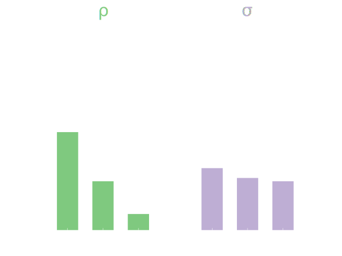Purity measures uniformity of eigenvalues
New idea of symmetry
Analogous quantity for the CFI
Minimize the purity
of the CFI
What have we learned?
-
Limitations of strict symmetry requirements (or: why one should never trust qubits)
Pure states ✔ Maximally mixed state ✔ Qubits ✔ Full-rank higher dimension ✘ -
Promising preliminary perturbative results